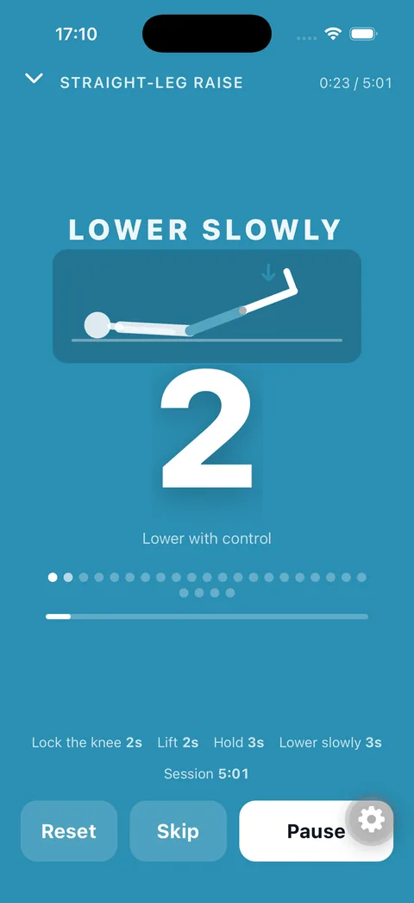

Your physio timer with a figure that moves in time with you.
Isometric holds, lift–hold–release reps, slides, plain countdowns. Keep the app open and follow the schematic figure and the big countdown — the screen stays on. Lock the phone and the sound cues keep going: a distinct beep for every step, ticks before it ends. Programs of exercises and a public catalog from clinics and physiotherapists.
Build your own in two minutes. Set up steps and animations right in the app, or hand your clinic's instruction sheet to an AI assistant with the Kinetempo skill — it writes the whole program, picks a schematic animation and checks it, ready to import.
Get the appCreate with AITry it in the browserBrowse the catalogMake your own in two minutes
Kinetempo is not a fixed set of workouts — it is a timer you shape, by hand or with an AI assistant. Describe the exercise in a chat and it replies with a link that adds it to the app, figure and all.
Claude and ChatGPT open with the request already written. For anything else — Gemini, a local model — copy it and paste it in. The assistant needs to be able to open a link and run code; without both it will send the animation as text you can paste into the exercise by hand.
Already have an exercise and only want a figure for it? Point the assistant at the animation guide instead — that one needs no code at all.
Build it in the app — animations included
New exercise → pick a preset (isometric hold, lift · hold · release, dynamic reps, plain timer) or lay out your own steps: type, seconds, ticks, label. Add a description, a video link or a schematic animation, set reps and sets — done. Pick one of the built-in schematic animations (they move in time with the timer), or attach a Lottie / GIF. Combine exercises into a program with rests between them.
Or let an assistant do it
Describe the movement, or paste the clinic's instruction sheet, and the assistant reads the guide and replies with a link that imports the finished exercise — steps, reps, description and a figure drawn for that movement. The app has the same buttons under New exercise. Authors filling the catalog can use the program-author skill instead.
Share and publish
Send a program by link, QR or file; a physiotherapist can hand it to a patient in one tap. The whole program travels inside the link — nothing is uploaded. Sending one to the public catalog opens a request for review; once it is accepted it appears in everyone's Library.
SQUEEZE RELAX
Every step of a rep has its own colour and sound: squeeze, lift, hold, release, move, rest. Ticks on the last three seconds.
Follow the figure, not the clock
The built-in schematic figure moves in time with the timer — squeeze, lift, hold, lower — so you read the tempo at a glance. The screen stays on while you train.
Sound keeps going when locked
Lock the phone or put it face down: every step change is a distinct beep and the last three seconds tick. iOS shows the time left and next steps on the Lock Screen; Android shows a countdown notification.
Programs
Combine exercises into a block with rests between them. Share by link, QR or file — or publish to the public catalog.
Video and animations
Attach a YouTube link, a video from your gallery, a Lottie animation, or use the built-in schematic figures that move in time with the timer.
Private by design
Everything stays on your phone. No account, no tracking. The only network request fetches this public catalog.
English · Русский · Română
Fully localised, including sounds and lock-screen labels.
Screens
Straight from the app.




Try it in your browser
The player, re-implemented for the web: same steps, same sounds, same schematic figure. No install needed.
Open the demoDownload
App Store and Google Play links appear here once the app is published. Until then, testers can request a TestFlight invite at es@defency.net.